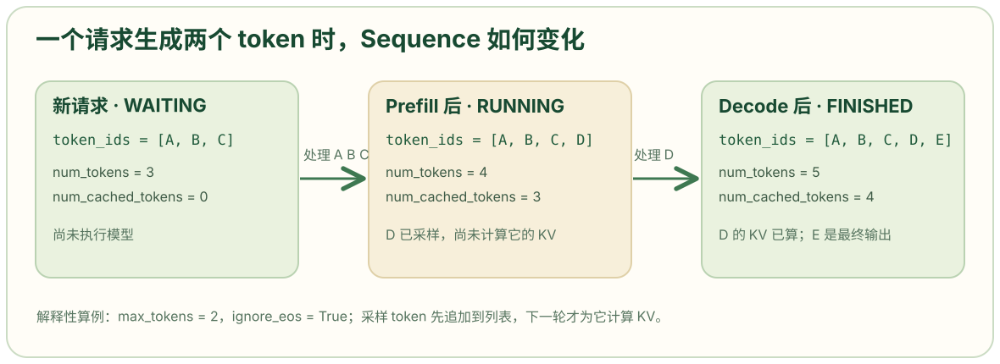

# 引入浅拷贝函数。构造请求时复制输入 token 列表，使后续 append_token() 不改变调用者原来的列表。元素是整数，浅拷贝已经足够隔离列表本身。
from copy import copy
# Enum 用于定义有限的状态集合，auto() 给各状态自动分配内部值。状态名比具体数字重要。
from enum import Enum, auto
# count() 产生递增整数，用作进程内请求 ID。
from itertools import count
# SamplingParams 提供当前请求的温度、生成上限和是否忽略 EOS。
from nanovllm.sampling_params import SamplingParams
# SequenceStatus 限定一个请求只能处于等待、运行或完成状态。
class SequenceStatus(Enum):
# 请求尚在等待可用计算或资源；包括尚未完成 prefill 的请求。
WAITING = auto()
# 完整 prompt 已被安排处理，接下来可进入 decode。调度器在完成 prefill 的调度阶段就会把状态改为 RUNNING，早于该轮 GPU 计算真正结束。
RUNNING = auto()
# 到达 EOS 或生成长度上限后不再参与调度。
FINISHED = auto()
# 一个 Sequence 保存一个请求的 token、调度状态和 KV 块编号。
class Sequence:
# 类级默认 KV 块大小；LLMEngine.__init__() 会把它改成当前引擎配置的 kvcache_block_size。因此所有 Sequence 实例在同一进程内共享这个类属性。
block_size = 256
# 类级 ID 生成器。每次构造 Sequence 都前进一步；模型 warmup 也构造临时 Sequence，因此第一个正式请求的 ID 不一定是 0。
counter = count()
# token_ids 是非空的 prompt ID 列表；sampling_params 是该请求的采样设置。默认参数对象创建一次，本类只读取它。
def __init__(self, token_ids: list[int], sampling_params = SamplingParams()):
# 为这个请求取一个新的整数 ID。这个 ID 之后用于将完成结果恢复到输入顺序。
self.seq_id = next(Sequence.counter)
# 新请求先处于等待状态。
self.status = SequenceStatus.WAITING
# 保存输入 token 列表的副本。以后生成的 token 也会追加到同一列表。
self.token_ids = copy(token_ids)
# 保存当前最后一个 token，供 decode 每轮直接取用。新请求刚创建时它是 prompt 的最后一个 token。
self.last_token = token_ids[-1]
# 当前列表总长度；生成过程中会递增。
self.num_tokens = len(self.token_ids)
# 固定记录最初 prompt 的长度；靠它区分 prompt 与生成结果。
self.num_prompt_tokens = len(token_ids)
# 尚没有 token 完成模型计算并成为可用 KV；命中前缀缓存时会直接增加。这个计数表示计算进度，不只是前缀命中的长度。
self.num_cached_tokens = 0
# 本轮安排送入模型计算的 token 数；调度前是 0，后处理结束后回到 0。
self.num_scheduled_tokens = 0
# 初始处于 prompt 处理阶段。进入 decode 时调度器会把它改为 False；抢占后可重新变成 True。
self.is_prefill = True
# 本请求使用的物理 KV 块编号列表，按 token 的逻辑顺序排列。创建时尚未分配块。
self.block_table = []
# 把温度复制到请求，方便执行器按请求组成采样参数张量。
self.temperature = sampling_params.temperature
# 把最大生成长度复制到请求，供后处理判断是否结束。
self.max_tokens = sampling_params.max_tokens
# 把是否忽略 EOS 的设置复制到请求。
self.ignore_eos = sampling_params.ignore_eos
# 让 len(seq) 返回 seq.num_tokens，方便调度器和执行器用普通 Python 长度语法。
def __len__(self):
return self.num_tokens
# 让 seq[start:end] 等价于对内部 token_ids 列表切片。执行器准备 prefill 输入时用到它。
def __getitem__(self, key):
return self.token_ids[key]
# @property 让调用者写 seq.is_finished；返回状态是否为 FINISHED。这是查询，不改变状态。
@property
def is_finished(self):
return self.status == SequenceStatus.FINISHED
# 当前总 token 数减去原 prompt 长度，得到已采样的生成 token 数。
@property
def num_completion_tokens(self):
return self.num_tokens - self.num_prompt_tokens
# 返回从开头到原 prompt 边界的列表切片；生成过程中这部分保持不变。
@property
def prompt_token_ids(self):
return self.token_ids[:self.num_prompt_tokens]
# 返回原 prompt 边界之后的 token；完成时它就是要解码成输出文本的部分。
@property
def completion_token_ids(self):
return self.token_ids[self.num_prompt_tokens:]
# 用向上取整公式计算当前序列需要多少 KV 块：(num_tokens + block_size - 1) // block_size。在默认块大小 256 下，长度 256 需要 1 块，长度 257 需要 2 块。
@property
def num_blocks(self):
return (self.num_tokens + self.block_size - 1) // self.block_size
# 计算最后一个逻辑块当前包含多少 token。例如长度 257、块大小 256 时，最后一块包含 1 个 token。
@property
def last_block_num_tokens(self):
return self.num_tokens - (self.num_blocks - 1) * self.block_size
# 先确认块序号有效，再返回第 i 块对应的 token ID 切片。这里拿到的是逻辑 token 内容，不是 GPU KV 张量。
def block(self, i):
assert 0 <= i < self.num_blocks
return self.token_ids[i*self.block_size: (i+1)*self.block_size]
# 把本轮采样结果追加到列表，更新 last_token 和 num_tokens。这一步尚未给新 token 计算 K/V；下一轮 decode 才会使用它。
def append_token(self, token_id: int):
self.token_ids.append(token_id)
self.last_token = token_id
self.num_tokens += 1
# __getstate__ 把多卡 worker 运行所需的长度、缓存进度、块表和 token 状态打包。
def __getstate__(self):
# Prefill 需要输入 token 列表，因此传完整 token_ids；decode 每个请求只输入最后一个 token，因此只传 last_token。
last_state = self.last_token if not self.is_prefill else self.token_ids
# 按固定顺序传送总长度、prompt 长度、已缓存数量、本轮计划数量、块表和 token 状态。
return (self.num_tokens, self.num_prompt_tokens, self.num_cached_tokens, self.num_scheduled_tokens, self.block_table, last_state)
# __setstate__ 从 __getstate__ 的元组恢复 worker 本轮计算需要的请求字段。
def __setstate__(self, state):
# 把元组的前五项还原到同名字段，第六项放进 last_state。
self.num_tokens, self.num_prompt_tokens, self.num_cached_tokens, self.num_scheduled_tokens, self.block_table, last_state = state
# 若收到完整 token 列表，说明是 prefill，恢复 token_ids 并取最后一个 token。
if isinstance(last_state, list):
self.token_ids = last_state
self.last_token = self.token_ids[-1]
# 若只收到一个整数 token，说明 decode 只需要 last_token；此时本地 token_ids 设为空列表。执行器后续不能假设 decode worker 持有完整历史 token。
else:
self.token_ids = []
self.last_token = last_state文件职责与对象边界
def add_request(self, prompt: str | list[int], sampling_params: SamplingParams):
if isinstance(prompt, str):
prompt = self.tokenizer.encode(prompt)
seq = Sequence(prompt, sampling_params)
self.scheduler.add(seq)这段调用代码位于 llm_engine.py：一个 prompt 转成 token ID 后，会建立一个 Sequence，再放进调度器的等待队列。Sequence 保存的是一个生成请求的状态。
对象内部同时保存三类信息：请求的 token（原 prompt 与后来采样的输出）、请求处在等待/运行/完成哪个状态，以及它已计算的 token 数和物理 KV 块映射。这样调度器传递一个 Sequence，就能获得本轮调度所需的请求状态，而不必把这些数据拆成多个互不关联的列表。
状态、编号与构造参数
class SequenceStatus(Enum):
WAITING = auto()
RUNNING = auto()
FINISHED = auto()
class Sequence:
block_size = 256
counter = count()
def __init__(self, token_ids: list[int], sampling_params = SamplingParams()):
self.seq_id = next(Sequence.counter)
self.status = SequenceStatus.WAITING
self.token_ids = copy(token_ids)
self.last_token = token_ids[-1]
self.num_tokens = len(self.token_ids)
self.num_prompt_tokens = len(token_ids)
self.num_cached_tokens = 0
self.num_scheduled_tokens = 0
self.is_prefill = True
self.block_table = []
self.temperature = sampling_params.temperature
self.max_tokens = sampling_params.max_tokens
self.ignore_eos = sampling_params.ignore_eosSequenceStatus 用 Enum 定义 WAITING、RUNNING、FINISHED 三种状态；auto() 自动给它们分配枚举值，业务代码应比较成员名而不是依赖数值。Sequence.counter = count() 是类级递增计数器；每次 Sequence.__init__() 调用 next(Sequence.counter)，就得到一个新的 seq_id。ModelRunner.warmup_model() 也会创建临时 Sequence，所以正式请求的首个 ID 不保证为 0，但其相对创建顺序仍可用于恢复输出顺序。
__init__(token_ids, sampling_params) 中的 token_ids 是一个请求的非空 prompt ID 列表。copy(token_ids) 建立新列表，之后 append_token() 追加输出时不会修改调用方原来的列表。last_token = token_ids[-1] 读取末尾项，因此空 prompt 会在这里失败。temperature、max_tokens、ignore_eos 从 SamplingParams 复制到请求，用于之后的采样和结束判断。SamplingParams 源码
block_size 是类属性，默认 256；创建引擎时 LLMEngine.__init__() 会将它设置为 config.kvcache_block_size。这个值只用于请求自身计算逻辑块边界；真实 GPU KV 张量由 ModelRunner 分配，物理块编号由 BlockManager 管理。
三个 token 计数与生成边界
@property
def num_completion_tokens(self):
return self.num_tokens - self.num_prompt_tokens
@property
def prompt_token_ids(self):
return self.token_ids[:self.num_prompt_tokens]
@property
def completion_token_ids(self):
return self.token_ids[self.num_prompt_tokens:]append_token() 位于这些属性之后；它把新采样的 token 加入同一个列表，并更新长度。
def append_token(self, token_id: int):
self.token_ids.append(token_id)
self.last_token = token_id
self.num_tokens += 1num_tokens 初始化为 prompt 长度，此后每调用一次 append_token() 加 1。num_prompt_tokens 固定为最初的 prompt 长度，于是 num_completion_tokens = num_tokens - num_prompt_tokens 给出已采样的输出个数；两个切片属性也以它为边界，分别返回原 prompt 和生成部分。
num_cached_tokens 表示已有多少 token 完成模型计算，其 K/V 可以被后续步骤使用；它包括命中并复用的完整前缀，不只指“命中缓存”的数量。num_scheduled_tokens 则只表示本轮计划计算多少 token：Scheduler.schedule() 设置它，Scheduler.postprocess() 在模型运行后把它加到缓存进度，再清零。调度与后处理源码

图是依照 Sequence.append_token() 和调度器后处理顺序构造的两步生成例子。每次新采样的 token 先进入 token_ids；它要到下一轮作为模型输入，才计入已完成 KV 计算的数量。
三个数可能不同。下面紧贴 append_token() 和 num_completion_tokens 的行为举例：prompt 为 [A,B,C]，完成一次 prefill 并采样出 D 后，token_ids=[A,B,C,D]，num_tokens=4、num_prompt_tokens=3、num_completion_tokens=1，但 num_cached_tokens=3。此时 D 已成为序列中的输出，却还没有作为下一轮模型输入写入 KV；下一轮 decode 才会读取 last_token=D。ModelRunner.prepare_decode()
块数、块切片与调度器接口
def __len__(self):
return self.num_tokens
def __getitem__(self, key):
return self.token_ids[key]@property
def num_blocks(self):
return (self.num_tokens + self.block_size - 1) // self.block_size
@property
def last_block_num_tokens(self):
return self.num_tokens - (self.num_blocks - 1) * self.block_size
def block(self, i):
assert 0 <= i < self.num_blocks
return self.token_ids[i*self.block_size: (i+1)*self.block_size]num_blocks 用 (num_tokens + block_size - 1) // block_size 对块数向上取整。若块大小为 256，长度 256 需要 1 个块，长度 257 需要 2 个块。last_block_num_tokens 给出最后一个逻辑块中当前有多少 token；上述长度 257 的例子里，它等于 1。block(i) 返回第 i 个逻辑块中的 token ID 切片，因此 BlockManager 能按整块内容计算前缀哈希。BlockManager.can_allocate()
block_table 则不是 token 内容：它按逻辑顺序存放物理 KV 块编号。例如逻辑块 0、1、2 可能映射为物理块 [7,3,11]。Scheduler 让 BlockManager.allocate() 填写这个列表；ModelRunner.prepare_block_tables() 再把多个请求的块表整理成 GPU 可读张量。这个例子是解释性构造，真实编号取决于当时的空闲池。prepare_block_tables()
__len__() 使 len(seq) 直接返回 num_tokens，__getitem__() 使 seq[start:end] 转发到内部 token 列表；@property 则让计算结果能写成 seq.num_blocks、seq.completion_token_ids，读取时像字段一样使用。这些是 Python 的对象接口，底层数据仍然保存在 self.token_ids 等成员中。
跨进程状态传递
def __getstate__(self):
last_state = self.last_token if not self.is_prefill else self.token_ids
return (self.num_tokens, self.num_prompt_tokens, self.num_cached_tokens, self.num_scheduled_tokens, self.block_table, last_state)
def __setstate__(self, state):
self.num_tokens, self.num_prompt_tokens, self.num_cached_tokens, self.num_scheduled_tokens, self.block_table, last_state = state
if isinstance(last_state, list):
self.token_ids = last_state
self.last_token = self.token_ids[-1]
else:
self.token_ids = []
self.last_token = last_state__getstate__() 与 __setstate__() 控制 Sequence 经 Python 序列化时传递哪些字段。多卡执行中，rank 0 通过共享内存把选中的请求交给其他 worker；prefill 需要完整的当前输入 token 列表，所以 __getstate__() 传 self.token_ids。decode 每个请求只计算上次采样出的 last_token，于是传这个整数，减少控制数据量。ModelRunner.write_shm() 与 read_shm()
__setstate__() 按固定元组顺序恢复长度、缓存进度、块表和最后状态。若最后一项是列表，就恢复 token_ids 并从末尾取 last_token；若是整数，就只保存该 last_token，把 worker 本地 token_ids 置为空列表。这里恢复的是执行器当前计算所需的字段，不是把主进程中的完整请求对象原样复制一份。